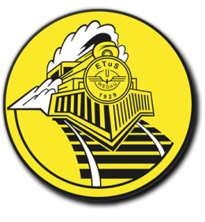

Eisenbahner Turn- und Sportverein · seit 1929
Ein Verein.
Ein Verein.
Acht Sportarten.
Beim ETuS Wedau machen Kinder, Jugendliche, Erwachsene und Senior*innen gemeinsam Sport – vom Kinderturnen über Handball und Tennis bis zum Segeln auf dem Masurensee.
1929 gegründet
8 Abteilungen
3–99 Jahre
1. Training kostenlos

Was passt zu mir?
Abteilungen
Alle Abteilungen & offene Angebote
Unsere Sportarten
Über uns
Mehr über den Verein
Mehr als ein Sportverein
Gegründet von Eisenbahnern, offen für alle: Seit 1929 trainieren, feiern und helfen sich beim ETuS Wedau Menschen jeden Alters.
TraditionDie Lok im Wappen erinnert an unsere Wurzeln am Bahnhof Wedau.
GemeinschaftSteg, Winterlager, Schießstand – vieles haben Mitglieder selbst gebaut.
Offen für alleEisenbahner und Nicht-Eisenbahner, Einsteiger und Meister.
JugendAusgebildete Übungsleiter begleiten Kinder ab 3 Jahren.

Unser Vereinsfilm. Mit Klick wird das Video von YouTube geladen (Datenschutz).


Unsere Vereinsanlage
Sport, Natur und Geselligkeit
Unsere Anlage an der Sechs-Seen-Platte: Hier wird trainiert, gefeiert und nach dem Spiel im Biergarten angestoßen.
- Rasenplatz & Sporthalle
- Vier Tennisplätze
- Schießstand & Bogenplatz
- Ninja Parcours für alle
- Grillecke & Jugendraum
- Gaststätte mit Kegelbahn
Gaststätte:
Probier's einfach aus
Das erste Training ist in jeder Abteilung kostenlos – für Kinder, Erwachsene und Senior*innen.
Unsere Partner
Alle Partner
Danke für eure Unterstützung
Ihr Unternehmen im Duisburger Süden? Unterstützen Sie Sport für alle Generationen – mit Bandenwerbung, Trikots oder einer Spende.
Partner werden